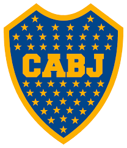

BOCA JUNIORS

Plantilla actual:
- C.Pavón
- D.Benedetto
- P.Perez
- A.werner
- J.Silva
- S.Perez
- F.Zuqui
- R.Centurion
- J.Insaurralde
- L.Magallán
- W.Barrios
- F.Gago
- N.Solís
- R.Bentancur
- F.Carrizo
- L.Jara
- F.Fabra
Es una entidad deportiva de Argentina con sede en el barrio porteño de La Boca, situado en la Comuna 4 de la Ciudad Autónoma de Buenos Aires (CABA). Fue fundado en dicho barrio el 3 de abril de 1905 por seis vecinos adolescentes hijos de italianos. El fútbol es su disciplina más destacada, aunque también compite a nivel profesional, nacional e internacionalmente, en básquet, voley, futsal y fútbol femenino ,mientras que deportes como el boxeo, judo, karate, taekwondo, lucha, gimnasia rítmica y artística se practican a nivel amateur. Juega sus partidos como local en el estadio Alberto J. Armando, conocido mundialmente como La Bombonera .
Muchos jugadores buenos pasaron por el Club Atletico Boca Juniors, muchos fueron jugadores de la selección Argentina como:
- Juan Roman Riquelme
- Carlos Tevez
- Diego Armando Maradona
En 113 años de historia, ganó 67 títulos oficiales, más que ningún otro club argentino
En 113 años de historia, Boca puede enorgullecerse de ser el club más ganador del fútbol argentino. En total, desde su fundación el 3 de abril de 1905, el club de la Ribera consiguió 67 títulos oficiales, dos más que River.